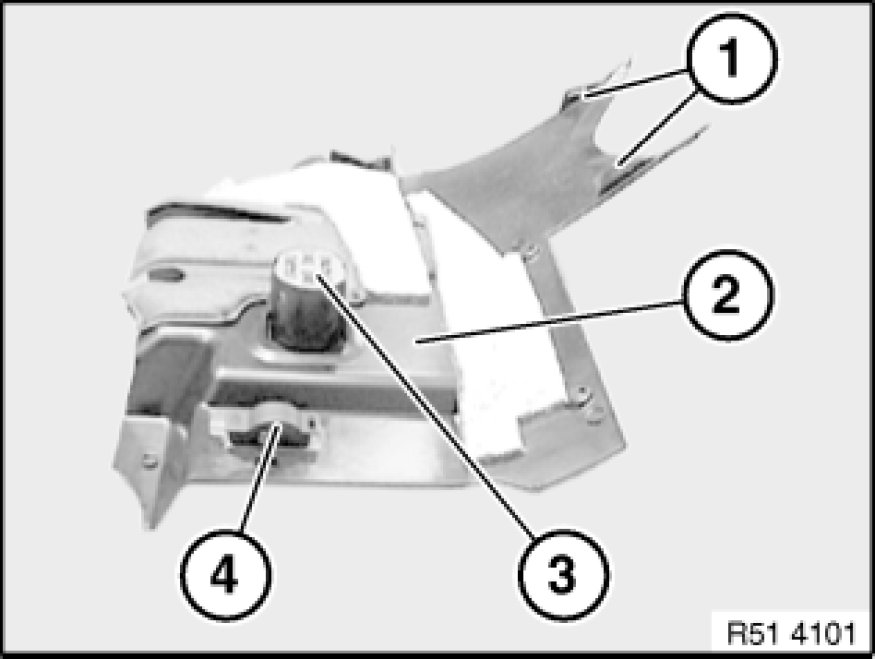

51 45 185 Removing and Installing/Replacing Panel For Pedals
51 45 185 - Removing and installing/replacing trim for pedal assembly
Release screws (1).
Unclip trim for pedal assembly (4) at retaining points (2).
Remove rotary clip (3) and pull back trim for pedal assembly (4) in direction of arrow.
Disconnect associated plug connections and remove trim for pedal assembly (3).

Installation:
Locator tabs (1) of trim for pedal assembly (2) must not be damaged.
Replacement:
- Unclip gong (3) and remove.
- Remove footwell light Removing and Installing/Replacing Footwell Light(4).